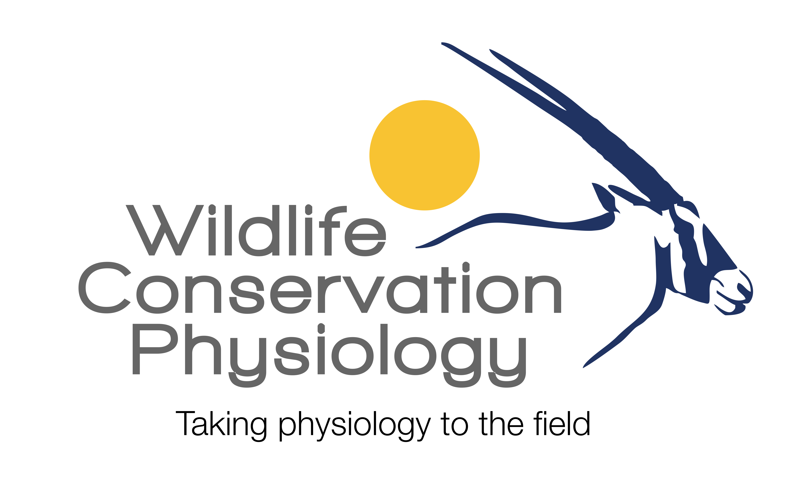
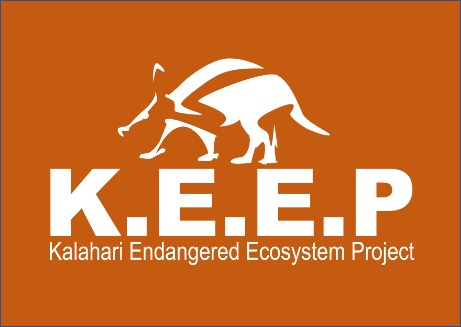
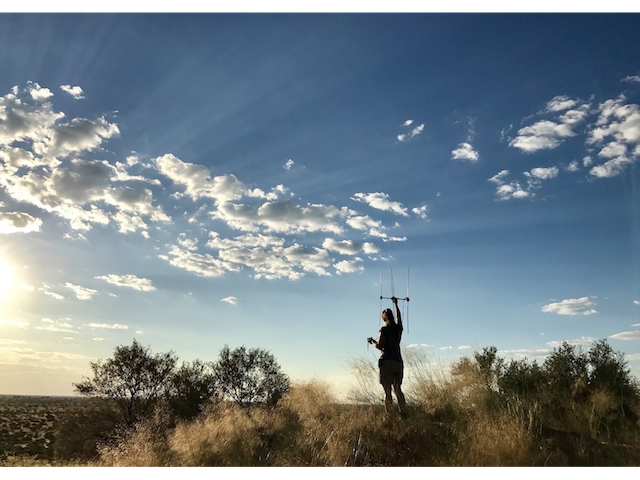
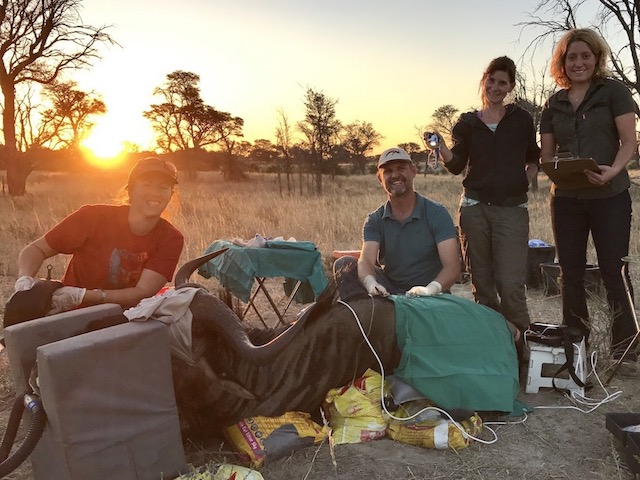
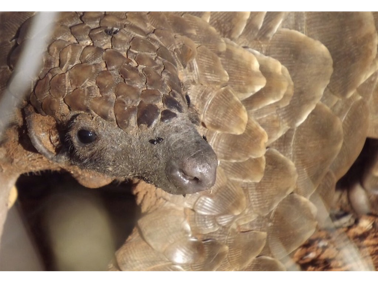

Andrea is director of the research group and a Professor in the School of Physiology at the University of the Witwatersrand, and an Extraordinary Lecturer in the Department of Paraclinical Sciences at the University of Pretoria.

Kalahari Endangered Ecosystem Project
KEEP is an on-going, multidisciplinary study on the reserve that takes into account that key Kalahari species interact with each other in complex food webs, and may respond differently to the direct and indirect effects of climate change.

Has anyone seen my study animals?
Keeping track of your study animals can be difficult in a ~110,000 hectare laboratory.
The Wildlife Conservation Physiology team is currently undertaking research in the Kalahari, Karoo and Kruger National Park of South Africa.

Taking high-tech instrumentation to the field
The Wildlife Conservation Physiology team has pioneered innovative methods to study the physiology of free-living mammals

Scaling up pangolin conservation
Pangolins are the most poached mammal in the world. Now ground pangolins face the additional threat of climate change.
The Wildlife Conservation Physiology team is investigating how these elusive creatures will respond.

The team
Our global team, with its home at the University of the Witwatersrand in South Africa, uses innovative technology to investigate the physiology of free-living mammals facing stressors resulting from environmental change and conservation management interventions.
-

Andrea Fuller
PhD
-
Anna is wildlife veterinarian at the Smithsonian Glabal Health Program, Kenya, and an Honorary Research Fellow in the School of Physiology at the University of the Witwatersrand.

Anna Haw
BVSc, MBA, PhD
-
Leith is an Associate Professor in the Department of Paraclinical Sciences at the University of Pretoria, South Africa, and an Honorary Senior Research Fellow in the School of Physiology at the University of the Witwatersrand.

Leith Meyer
BVSc, PhD
-
Shane is a Professor of Physiology in the School of Human Sciences at the University of Western Australia, Australia, and an Honorary Professorial Research Fellow in the School of Physiology at the University of the Witwatersrand.

Shane Maloney
PhD
-
Richard is an Assistant Professor in the Department of Anthropology at the University of Wisconsin-Madison, USA, and an Honorary Senior Research Fellow in the School of Physiology at the University of the Witwatersrand.

Richard McFarland
PhD
-
Duncan is Emeritus Professor and Honorary Professorial Research Fellow in the School of Physiology at the University of the Witwatersrand, and an Adjunct Professor in the School of Human Sciences at the University of Western Australia.

Duncan Mitchell
PhD, DSc
-
Edward (Ned) is a lecturer in the Department of Anatomy and Physiology in the Faculty of Veterinary Science at the University of Pretoria, South Africa, and an Honorary Research Fellow in the School of Physiology at the University of the Witwatersrand.

Ned Snelling
PhD
-
Benjamin is a Research Assistant at the Biometry and Evolutionary Biology Laboratory at the University of Lyon, in France, and an Honorary Research Fellow in the School of Physiology at the University of the Witwatersrand.

Benjamin Rey
PhD
-
Vini is a Visiting Professor at Paraiba Universidade Federal, and an Honorary Senior Research Fellow in the School of Physiology at the University of the Witwatersrand.

Vinicius Fonseca
PhD